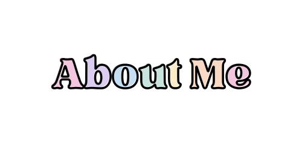
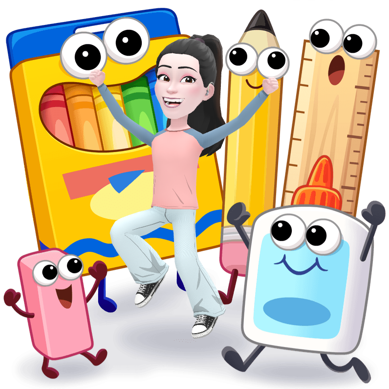

Books to Read the First Week of School
I know there are a lot of lists of books to read on the first day and/or the first week of school, but if you're like me, you never get tired of discovering or rediscovering books! Here is my list. I chose these books for my future class, because they all share a positive message!
-
Our Class is a Family (and Our School is a Family)
Purchase on Amazon I love these books! I love that the classroom/school can be a home away from home. It can be a place where everyone feels like they belong and are loved. The class/school can be like a family that is kind, supportive, and looks out for each other. Here is a video of a pretend book award I created as part of an assignment for school. -
How to Get Your Octopus to School
Purchase on Amazon This book is about an adorable octopus who is nervous about going to school. Children going to school can relate. Hopefully though, their nerves will be forgotten when they have fun finding the octopus hiding from his owner on each of the pages as she gets them ready for school, and they will get excited to make new friends like the octopus does in his class. I believe this book would be good to read at Open House. Here is a cute video I found that you could play at Open House while you walk around and talk to students and their families. -
The Smallest Spot of a Dot
Purchase on Amazon This book is about how we are all made of dots AKA genes. 99% of the dots we have are the same dots that everybody has, but the smallest spot of a dot is what makes us different. I love that this book has us embracing those differences. It's a sweet story about loving yourself and what makes you you and loving others too for what makes them them. -
Hello World!
Purchase on Amazon This book encourages curiosity and getting to know people (such as your classmates and your teacher!) How you get to know them is by by going beyond appearances and asking them questions. That's exactly what the girl does in the story. By asking the other members of her community questions, she learns that everybody has a story to share! -
We Don't Eat Our Classmates
 Purchase on Amazon
This book is so cute and funny! A t-rex named Penelope has a hard time making friends in school. To make a friend, you have to be a friend. That's the lesson Penelope learns. The reason Penelope has a hard time making friends in school is because she keeps eating her classmates! When she stops eating them (even when they're covered in barbecue sauce!) she starts making friends!
Purchase on Amazon
This book is so cute and funny! A t-rex named Penelope has a hard time making friends in school. To make a friend, you have to be a friend. That's the lesson Penelope learns. The reason Penelope has a hard time making friends in school is because she keeps eating her classmates! When she stops eating them (even when they're covered in barbecue sauce!) she starts making friends!
-
The Magical Yet
Purchase on Amazon In this book, Yet, is a living being - a cute creature that follows the main character around and ensures they never give up, but they persevere. Just because you can't do something now, doesn't mean you won't ever be able to do it. You just can't do it yet. This book encourages a growth mindset. Mistakes are part of learning and growth happens when you persevere even when it's hard.

Besides teaching, I love designing and coding on the web, writing, reading, playing video games, doing arts and crafts, imagining I got my letter to Hogwarts, geeking out over new fabric I found, learning new things, and being at home with my family - my husband, our two boys, and our cat.
